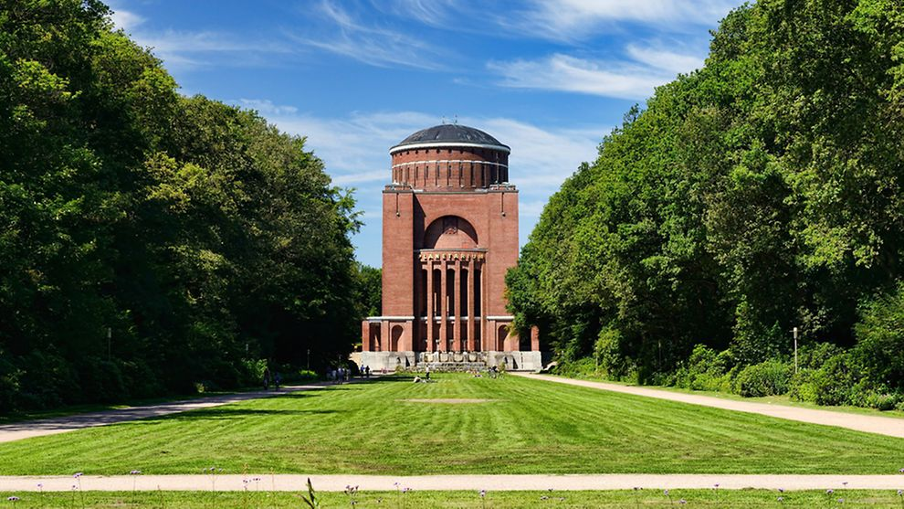
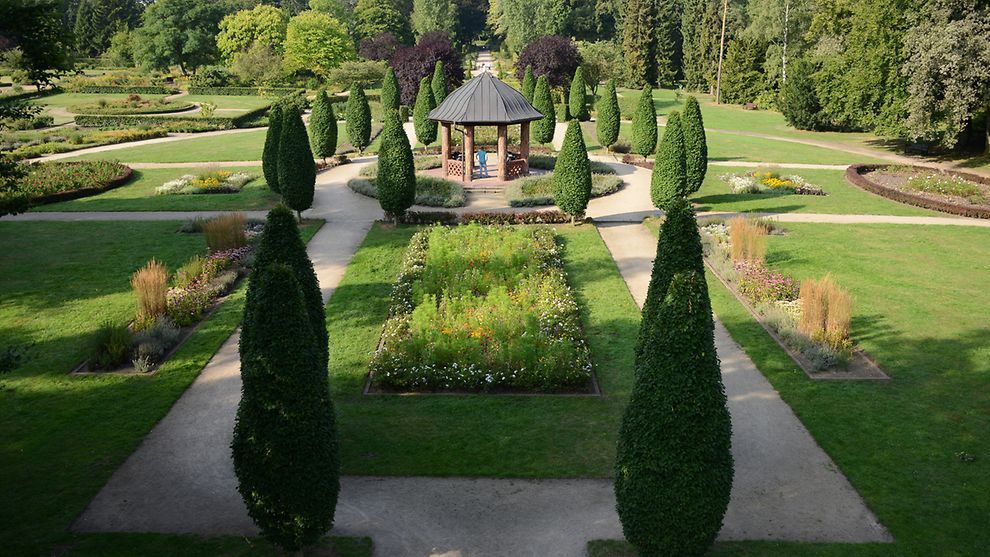
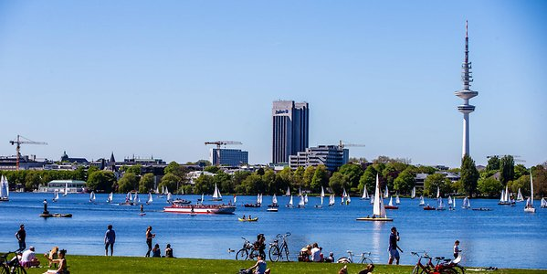
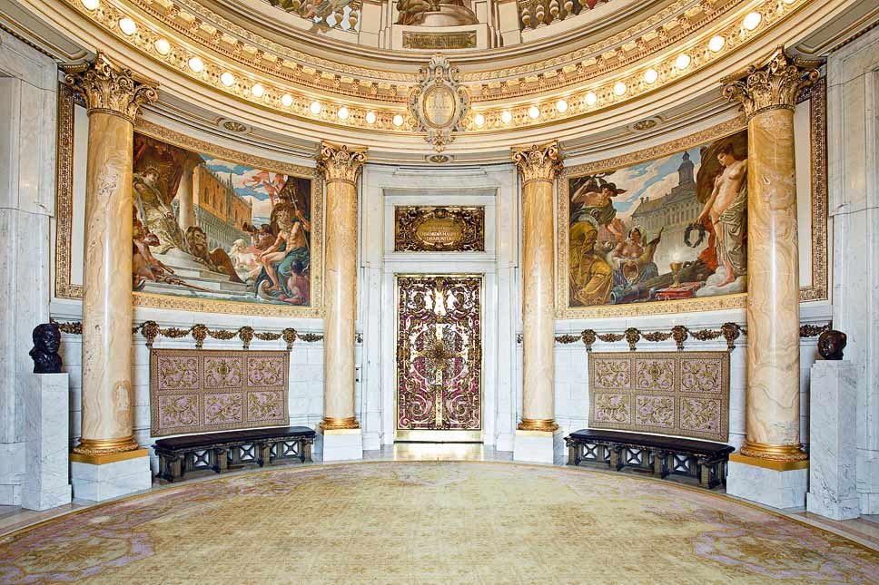

H
M
S
AM
willkommen in hamburg
Hafenstadt Hamburg Hamburg verfügt über den wichtigsten Hafen Deutschlands und ist ein Zentrum des Außenhandels.
Hamburg ist eine Stadt im Norden von Deutschland. Sie liegt am Fluss Elbe und ist bekannt für ihren großen Hafen. In Hamburg leben fast zwei Millionen Menschen. In Deutschland ist nur Berlin noch größer. Hamburg ist über 1.000 Jahre alt.Der Hamburger Hafen ist der größte in Deutschland und einer der größten der Welt. Außerdem gibt es hier Werften, wo neue Schiffe gebaut werden, ein großes Flugzeugwerk und viele Fabriken. Dort macht man aus Erdöl, Kupfer, Gummi oder Kaffee neue Dinge.
hamburg stadtpark


Der Stadtpark Hamburg ist ein 148 Hektar großer öffentlicher Park im Stadtteil Winterhude im Bezirk Hamburg-Nord in Hamburg. Der 1914 eröffnete Park gilt als bedeutendes Beispiel für die Wandlung des deutschen Garten- und Landschaftsbaues vom Volksgarten zum Volkspark. Wikipedia
Adresse: Stadtpark, Hamburg
X
Adresse: Stadtpark, Hamburg
hamburg Elbphilharmonie
Die Elbphilharmonie ist ein im November 2016 fertiggestelltes Konzerthaus in Hamburg. Sie wurde mit dem Ziel geplant, ein neues Wahrzeichen der Stadt und ein „Kulturdenkmal für alle“ zu
Wikipedia
Adresse: Platz der Deutschen Einheit 4, 20457 Hamburg
Eröffnet: 11. Januar 2017
Kapazität: 2.100
Baukosten: 866 Millionen EUR
Architekten: Pierre de Meuron, Jacques Herzog
X
Adresse: Platz der Deutschen Einheit 4, 20457 Hamburg
Eröffnet: 11. Januar 2017
Kapazität: 2.100
Baukosten: 866 Millionen EUR
Architekten: Pierre de Meuron, Jacques Herzog
Hamburg Hafen


Der Hamburger Hafen ist ein offener Tidehafen an der Unterelbe in der Freien und Hansestadt Hamburg. Er ist der größte Seehafen in Deutschland und nach dem Hafen Rotterdam sowie dem Hafen von Antwerpen der drittgrößte in. Wikipedia
Gründung: 7. Mai 1189, Hamburg
Ort: Hamburg Hafen
Eigentümer: Hamburg Port Authority
X
Gründung: 7. Mai 1189, Hamburg
Ort: Hamburg Hafen
Eigentümer: Hamburg Port Authority
Hamburger Alster


Mit einer stattlichen Größe von 164 Hektar ist die Außenalster an allen Ufern ein beliebter Anlaufpunkt für Spaziergänge. Bei Joggern sind die Wege entlang des Gewässers ebenfalls beliebt und kleine Segelschiffe sowie die Alsterdampfer drehen ihre Runden auf dem Wasser.
Wikipedia Adresse: Jungfernstieg
X
Wikipedia Adresse: Jungfernstieg
Hamburger Rathaus


Das Hamburger Rathaus ist der Sitz der Hamburgischen Bürgerschaft und des Senats der Freien und Hansestadt Hamburg. Das architektonisch prachtvolle Gebäude an der Kleinen Alster wurde von 1886 bis 1897 im historistischen Stil der Neorenaissance errichtet. Wikipedia
Adresse: Rathausmarkt 1, 20095 Hamburg
Eröffnet: 26. Oktober 1897
Architektonische Höhe: 112 m
X
Adresse: Rathausmarkt 1, 20095 Hamburg
Eröffnet: 26. Oktober 1897
Architektonische Höhe: 112 m